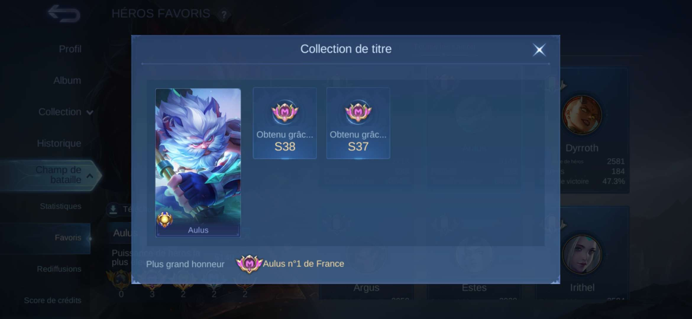

FORMATION
| UNIVERSITE | |
|---|---|
| Programme: | BUT Réseaux et Télécommunication |
| Période : | 2025-Aujourd'hui |
| Description: | Cette formation me permet de consolider mes compétences en réseaux informatiques, télécommunications et systèmes numériques. Je développe des compétences techniques telles que la configuration de réseaux, l'administration de systèmes et les premiers concepts de cybersécurité. Elle m'apporte également une méthodologie de travail rigoureuse, une capacité d'analyse accrue et une meilleure compréhension des enjeux de sécurité des infrastructures informatiques. |
| Lieu: | Clermont-Ferrand, France |
| BACCALAUREAT | |
|---|---|
| Filière: | Général |
| Période: | 2022-2025 |
| Description: | Titulaire d'un baccalauréat général, mention assez bien, avec les spécialités Mathématiques, Numérique et sciences de l'informatique et Physique-chimie. Cette formation m'a apporté des bases solides, en développant mon raisonnement logique et ma capacité à résoudre des problèmes complexes. Elle m'a également permis d'acquérir des premières compétences en programmation et en algorithmique, facilitant ainsi mon orientation vers les domaines des réseaux et de la cybersécurité. |
| Lieu : | Orléans, Loiret, Centre-Val-De-Loire |
EXPERIENCE
Stage en boulangerie
Pendant la semaine du 14 au 23 février, j'ai effectué un stage dans une boulangerie où je m'occupais
de la vente ainsi que de la gestion du site web.
Ce stage avait pour but d'aider ma famille ainsi que de développer mes compétences dans la gestion de la relation client.
La gestion du site web se faisait de deux manières :
La première consistait à mettre à jour le site ainsi qu'à corriger d'éventuels bugs.
La seconde était la présentation du site web aux clients ainsi que leur formation à son utilisation.
La moyenne d'âge étant élevée, tous n'avaient pas les connaissances nécessaires au fonctionnement d'un site web.
Ce stage m'a permis de développer mes compétences en communication et particulièrement dans la vulgarisation, ainsi que le contact client.
Création d'un site web – Projet collaboratif
En collaboration avec un infographiste, j'ai participé à la création du site web de la
boulangerie Le Pain d'Arpia, fondée en 2025.
Le site a été développé à l'aide de la plateforme Odoo. Mon rôle consistait à assurer l'intégration
technique et la mise en place d'un système de click-and-collect, tandis que l'infographiste s'occupait
du design et de l'interface utilisateur.
Ce projet m'a permis de développer des compétences en travail d'équipe, en gestion du temps et en
organisation dans des délais courts.
QUALITÉS
Logique
Je possède un raisonnement logique et structuré, me permettant d'analyser efficacement un problème avant de proposer une solution adaptée. J'aime comprendre le fonctionnement d'un système dans son ensemble afin d'en identifier les failles ou les points d'amélioration, que ce soit dans un contexte réseau, informatique ou organisationnel.
Curiosité
Naturellement curieux, je m'intéresse particulièrement aux domaines scientifiques et informatiques. Cette curiosité me pousse à effectuer des recherches personnelles, notamment autour de la cybersécurité et de la protection des données, afin d'approfondir mes connaissances au-delà du cadre scolaire.
Concentration
La pratique du tir à l'arc m'a permis de développer une forte capacité de concentration et de maîtrise de soi. Je suis capable de rester focalisé sur une tâche pendant de longues périodes, ce qui me permet de travailler efficacement sur des projets techniques nécessitant rigueur et précision.
PROJETS

Création de portfolio
Introduction
Dans le cadre de mes études, j'ai mené un projet sur la photométrie et la réflectométrie appliquées aux fibres optiques. Ces techniques sont indispensables pour évaluer et optimiser les performances des réseaux modernes. Ce travail m'a permis de mettre à l'épreuve ma discipline et ma curiosité scientifique, car chaque mesure devait être analysée avec précision.
Objectif
Le but du projet était de maîtriser ces méthodes afin de calculer précisément la puissance et l'atténuation d'une liaison. J'ai dû faire preuve de responsabilité en manipulant du matériel sensible et en consignant rigoureusement chaque étape pour garantir la fiabilité des résultats. Cette démarche a renforcé ma capacité à travailler de manière autonome et organisée.
Conclusion
Cette expérience a enrichi ma compréhension théorique et pratique des fibres optiques. J'ai appris à interpréter les mesures de photométrie et de réflectométrie et à mieux appréhender le fonctionnement des transmissions optiques, constituant ainsi un socle solide pour la suite de mon parcours. Elle a également prouvé que ma discipline et ma curiosité sont des atouts essentiels pour relever de futurs défis technologiques.

Création d'un portfolio hébergé sur GitHub
Introduction
Lors de l'année 2025/2026 j'ai eu l'opportunité de créer un portfolio sous le format web. Celui-ci a pour but de démontrer mes compétences de développement avec les langages comme HTML et CSS. Ce projet m'a fait découvrir le site GitHub, un hébergeur de page web gratuit et fournissant des connexions sécurisées.
Objectif
L'objectif est de réussir à me présenter sur internet de façon claire et détaillée tout en montrant que je suis capable de créer un site web stable et fonctionnel. Ce travail est plutôt complexe car la gestion du temps est plutôt difficile en vue des deadlines fournies ainsi que la gestion de la possibilité de le modifier facilement au fur et à mesure de mes études.
Conclusion
Ce projet m'a mis en difficulté au niveau des dates de rendus vu que j'ai plusieurs projets importants en même temps dont un autre site web et les différents partiels de l'IUT.
DIVERS

Tir à l'arc
Comme indiqué dans mes qualités, je suis un grand passionné de tir à l'arc. J'ai commencé à l'âge de 5 ans et j'ai participé à plusieurs compétitions. Pour le moment, je suis à l'arrêt, mais je prévois de reprendre prochainement.
Le tir à l'arc me permet de me décompresser et de me recentrer sur moi-même. Cette discipline m'a appris la patience, la concentration et la maîtrise de soi, des qualités qui me sont très utiles dans mes études et projets professionnels.

Jeux vidéo
Je joue depuis mon plus jeune âge à tout type de jeux, tels que des MOBA, des RPG ou encore des Dark Souls. J'apprécie particulièrement les jeux complexes, tant par leur style que par leur stratégie.
J'ai d'ailleurs eu l'occasion d'être recruté dans une petite structure d'e-sport durant mes années de collège et de lycée. Cette équipe était spécialisée dans les MOBA, notamment Mobile Legends. J'ai participé plusieurs fois à des tournois nationaux, dont j'ai eu l'occasion d'en gagner deux, j'ai par la suite eu la possibilité de me classer parmi les meilleurs joueurs français avec un personnage en particulier.
Contact et CV
Si vous souhaitez en savoir plus sur mon parcours ou échanger à propos d'une opportunité professionnelle, je vous invite à consulter mon CV ou à me contacter via LinkedIn.